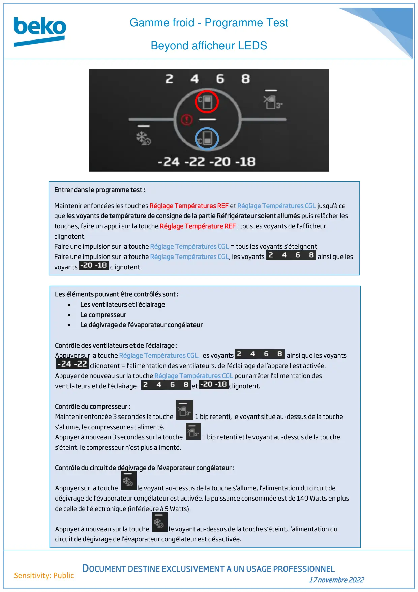
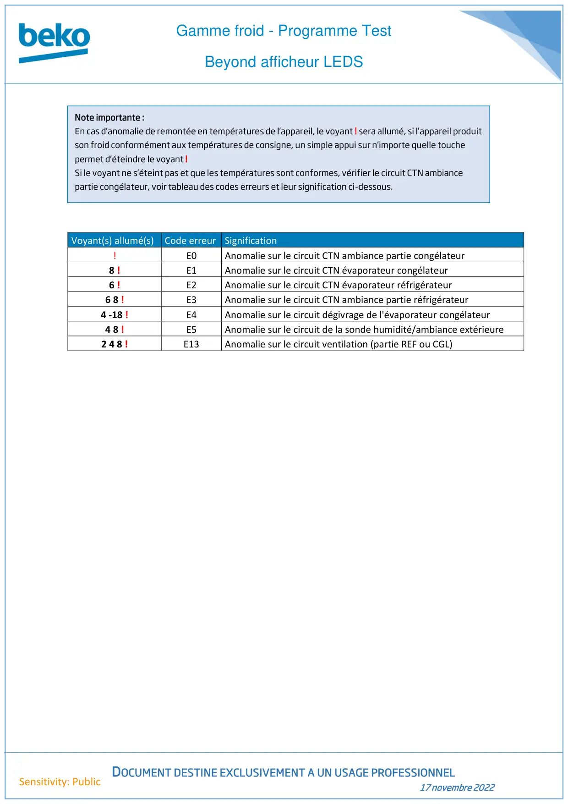

Prog Test Gamme Froid Beyond Aff Led

Gamme froid - Programme TestBeyond afficheur LEDSDOCUMENT DESTINE EXCLUSIVEMENT A UN USAGE PROFESSIONNEL17 novembre 2022Sensitivity: PublicEntrer dans le programme test :Maintenir enfoncées les touches Réglage Températures REF et Réglage Températures CGL jusqu’à ceque les voyants de température de consigne de la partie Réfrigérateur soient allumés puis relâcher lestouches, faire un appui sur la touche Réglage Température REF : tous les voyants de l’afficheurclignotent.Faire une impulsion sur la touche Réglage Températures CGL = tous les voyants s’éteignent.Faire une impulsion sur la touche Réglage Températures CGL, les voyants ainsi que lesvoyants clignotent.Les éléments pouvant être contrôlés sont :•Les ventilateurs et l’éclairage•Le compresseur•Le dégivrage de l’évaporateur congélateurContrôle des ventilateurs et de l’éclairage :Appuyer sur la touche Réglage Températures CGL, les voyants ainsi que les voyantsclignotent = l’alimentation des ventilateurs, de l’éclairage de l’appareil est activée.Appuyer de nouveau sur la touche Réglage Températures CGL pour arrêter l’alimentation desventilateurs et de l’éclairage : et clignotent.Contrôle du compresseur :Maintenir enfoncée 3 secondes la touche 1 bip retenti, le voyant situé au-dessus de la touches’allume, le compresseur est alimenté.Appuyer à nouveau 3 secondes sur la touche 1 bip retenti et le voyant au-dessus de la touches’éteint, le compresseur n’est plus alimenté.Contrôle du circuit de dégivrage de l’évaporateur congélateur :Appuyer sur la touche le voyant au-dessus de la touche s’allume, l’alimentation du circuit dedégivrage de l’évaporateur congélateur est activée, la puissance consommée est de 140 Watts en plusde celle de l’électronique (inférieure à 5 Watts).Appuyer à nouveau sur la touche le voyant au-dessus de la touche s’éteint, l’alimentation ducircuit de dégivrage de l’évaporateur congélateur est désactivée.
1 / 2
Gamme froid - Programme TestBeyond afficheur LEDSDOCUMENT DESTINE EXCLUSIVEMENT A UN USAGE PROFESSIONNEL17 novembre 2022Sensitivity: PublicVoyant(s) allumé(s)Code erreur Signification!E0Anomalie sur le circuit CTN ambiance partie congélateur8 !E1Anomalie sur le circuit CTN évaporateur congélateur6 !E2Anomalie sur le circuit CTN évaporateur réfrigérateur6 8 !E3Anomalie sur le circuit CTN ambiance partie réfrigérateur4 -18 !E4Anomalie sur le circuit dégivrage de l'évaporateur congélateur4 8 !E5Anomalie sur le circuit de la sonde humidité/ambiance extérieure2 4 8 !E13Anomalie sur le circuit ventilation (partie REF ou CGL)Note importante :En cas d’anomalie de remontée en températures de l’appareil, le voyant ! sera allumé, si l’appareil produitson froid conformément aux températures de consigne, un simple appui sur n’importe quelle touchepermet d’éteindre le voyant !Si le voyant ne s’éteint pas et que les températures sont conformes, vérifier le circuit CTN ambiancepartie congélateur, voir tableau des codes erreurs et leur signification ci-dessous.
2 / 2